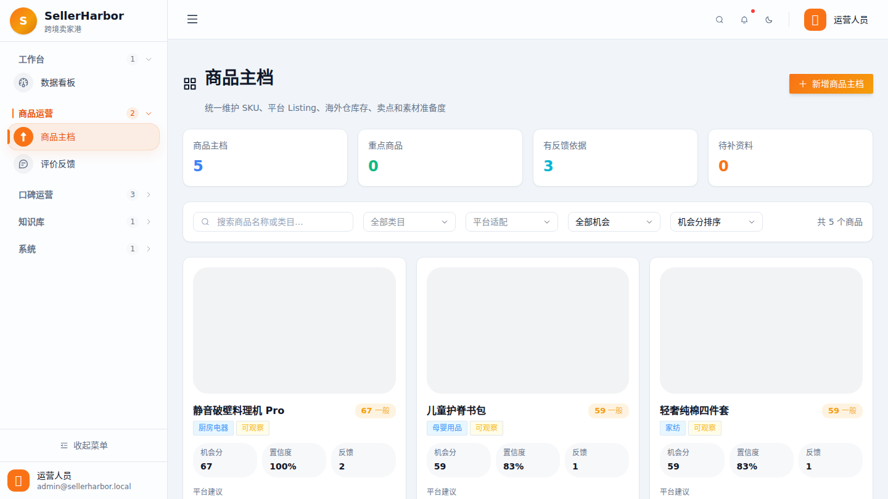
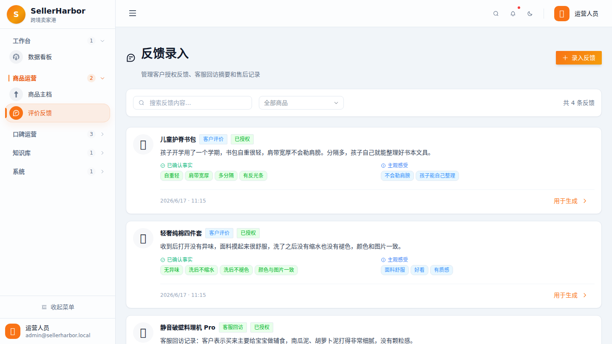
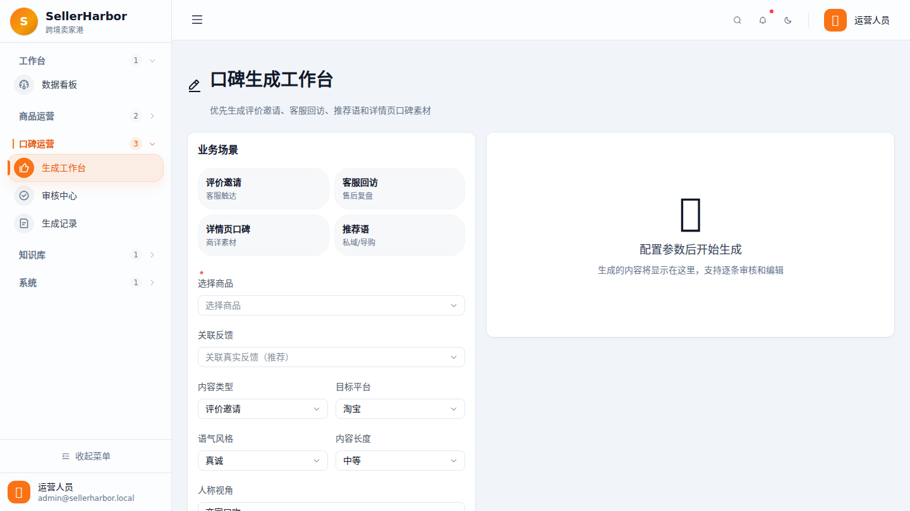
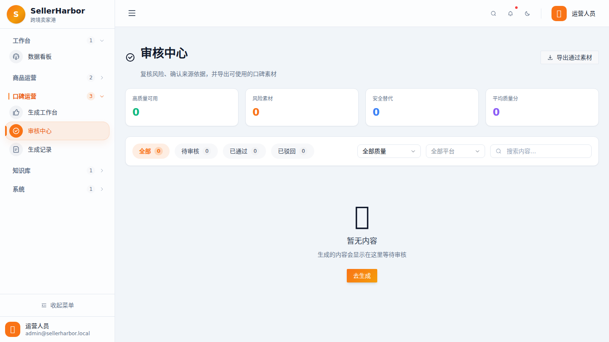
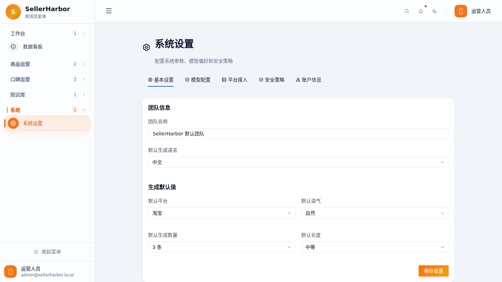

跨境卖家的商品运营信息被拆散了
同一批 SKU 往往同时面向 Temu、TikTok Shop 等多个平台，商品资料、Listing 状态、素材准备度、海外仓库存、低库存预警、好评反馈和热款动作分散在平台后台、表格、客服记录和仓库系统里。SellerHarbor 的目标，是把这些信息收口成一个轻量但可靠的商品运营控制面。
同一批 SKU 往往同时面向 Temu、TikTok Shop 等多个平台，商品资料、Listing 状态、素材准备度、海外仓库存、低库存预警、好评反馈和热款动作分散在平台后台、表格、客服记录和仓库系统里。SellerHarbor 的目标，是把这些信息收口成一个轻量但可靠的商品运营控制面。
项目覆盖 Next.js / React / Arco Design 前端工作台，FastAPI / Pydantic / LangChain / LangGraph 后端服务，SQLite 与 MinIO 的 MVP 存储，Docker Compose 本地栈，以及 readiness、metrics、审计、限流、请求 ID、任务恢复和 Temu 只读同步预留。






统一维护商品名称、类目、SKU、变体、平台目标、卖点、素材、禁用词和服务承诺。
围绕 Temu / TikTok Shop 跟踪标题、描述、类目、素材、状态、缺失字段和优先补齐动作。
按仓库、SKU、平台和安全库存线展示可用库存、占用库存、低库存预警和热款断货风险。
不依赖外部模型也能从原始反馈中提取摘要、确认事实、主观感受、风险点和推荐用途。
生成评价邀请、客服回访、推荐语和口碑描述；第一人称体验必须存在真实反馈依据。
内容质量分、平台风险、事实一致性和人工审核动作进入可追踪流程，支持复制和 CSV 导出。
当前默认单店铺运行，模型里保留 Store Registry、storeId 边界和多平台授权扩展槽。
Docker healthcheck、readiness、metrics、请求 ID、限流、租户隔离、审计和超时任务恢复。
看板、商品、反馈、生成、审核和设置页面组成跨境运营工作台，统一发送租户和 API key 上下文。
后端承载商品、反馈、生成任务、审核、运营概览、店铺注册、Temu 状态、审计和系统健康接口。
SQLite 存储 MVP 元数据，MinIO 管理资产；LangGraph / LangChain 负责生成链路，反馈整理可本地降级。
readiness、metrics、限流、审计、任务超时恢复和 Docker Compose healthcheck 让本地栈具备可运维性。
http://localhost:33001/dashboard 前端工作台可访问。http://localhost:38081/api/health 返回 status: ok。/api/readiness 当前为 healthy，SQLite、MinIO、Store Registry 和租户边界已就绪。/api/commerce/overview 返回 5 个商品主档、50% 上架就绪率、60% 库存健康率和 5 个热款/潜力款。/api/metrics 暴露请求总数、错误数、限流数、平均耗时和生成任务状态。把仓库、库存、平台 Listing、店铺授权和平台占用从商品属性迁移到结构化表。
Temu 先做商品、订单、履约和库存信号的只读 dry-run，再导入 SellerHarbor 主档。
迁移到 PostgreSQL、Redis worker、正式权限、备份恢复、集中日志、指标和告警。
围绕低库存、热款补货、Listing 缺口、反馈风险和素材优先级，形成可解释的运营建议 Agent。